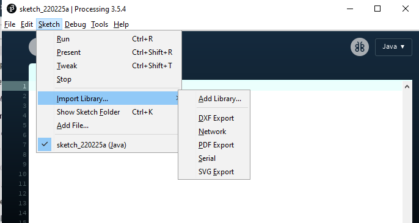

Interface Programming
Introduction
Using external software, we can create an interface that interacts with an input or output device. For this assignment, we are tasked to write an application that interfaces the user with an input or output device that we made. I used my own arduino pro micro for this assignment.
Software download and installation
For this assignment, I used Processing to make the interface. I downloaded Processing 3.5.4 from here, then extracted the zip file. In the folder created, I just opened up Processing.exe.
Configuring Processing. A sketch window opened up.
As this is my first time using processing, I decided to follow a tutorial by Hardik Rathod on youtube to make a simple application with buttons to interface with LEDs on an arduino. To start off, I first had to add the ControlP5 library.
Once the processing sketch window is open, I went to "sketch" in the top navbar, hovered over "import library" and clicked "add library"
From there, I just searched for "ControlP5" and installed the library.

Once that was done, I can start making the application.
Making the window.
Following the tutorial, I first made a window to contain the buttons. After I wrote the code, I clicked the run button on the top. A new window should open up.
Making the buttons.
I added the buttons on the window by copy pasting the same 3 lines into the setup of the sketch. I then ran the sketch and checked for bugs.
Because the height of the window was too short, the bottom button ended up getting cropped. To remedy this, I just changed the height to 500.
Afterwards, I changed the font to "calibri light" at font size 20, by adding these lines of code. .setFont is added to all the buttons that I want to change font to.

Now the window and buttons look like this.
The arduino part.
Now I am making an arduino sketch to interact with the application. In the tutorial, the arduino sketch takes in the serial input from Processing and switches on and off some LEDs. In essence, it takes in a char value from serial and does a thing.
Serial Interfacing
In order for Processing to have serial communication, I added a few new lines.
Then, I added the functions to send the serial char when the button is pressed.
The circuit
The electronics is very simple. I used an arduino pro micro clone, 3 200ohm resistors and 3 leds, green, red and yellow. Outputs 8,9 and 10 just go out to resistors and LEDs in series, and ground is connected back to the arduino
Testing
Afterwards, I plugged in the pro micro, uploaded the arduino sketch and ran the processing code. Here is a video of the programs working.
Thoughts
Overall, processing was a fun assignment. In the future I want to try and implement this to my other projects. However, I do not think I will be implementing this in my final project.
Files
Arduino SketchProcessing Sketch